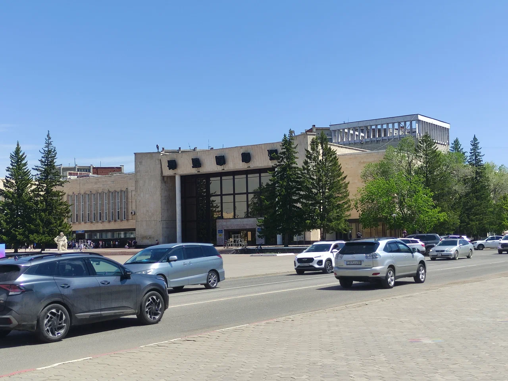
Построенный к 100-летию В.И. Ленина в 1970 году, Дворец Культуры стал архитектурным подарком молодым строителям и горнякам города. Это образец торжественного советского стиля, призванный показать мощь и культурный уровень нового промышленного центра.
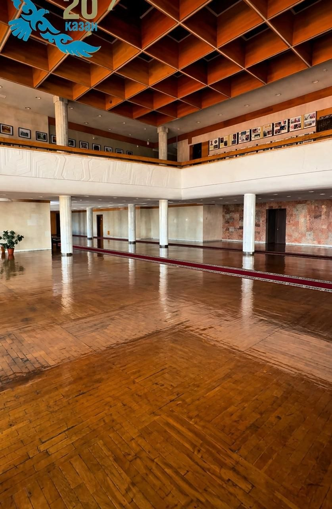
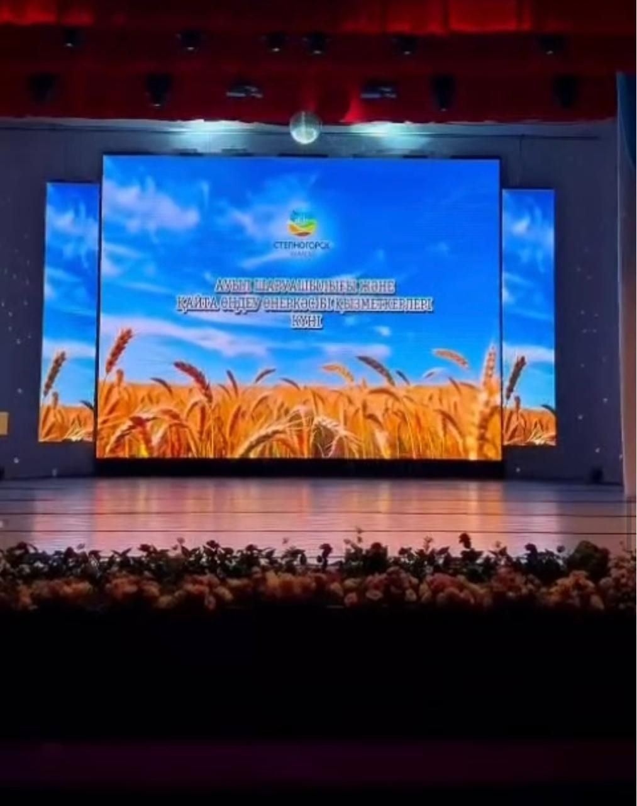
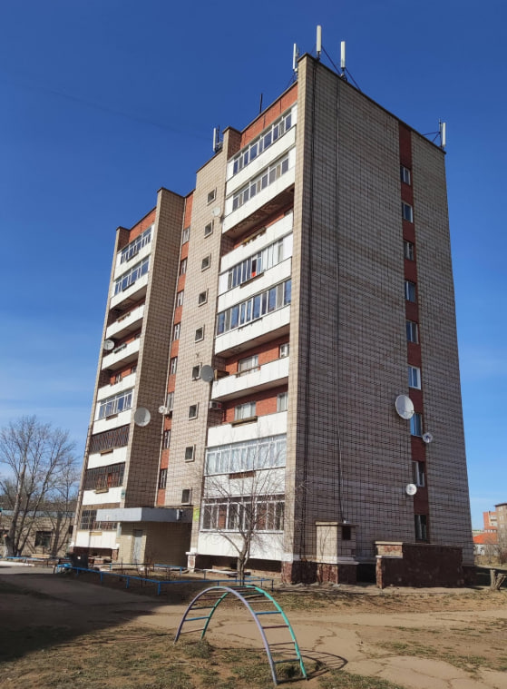
Важнейшая площадка для укрепления межэтнического согласия в Степногорске. Здесь располагаются этнокультурные объединения, проводятся праздники народов Казахстана, фестивали и выставки, способствующие сохранению духовных традиций и языков всех жителей города.
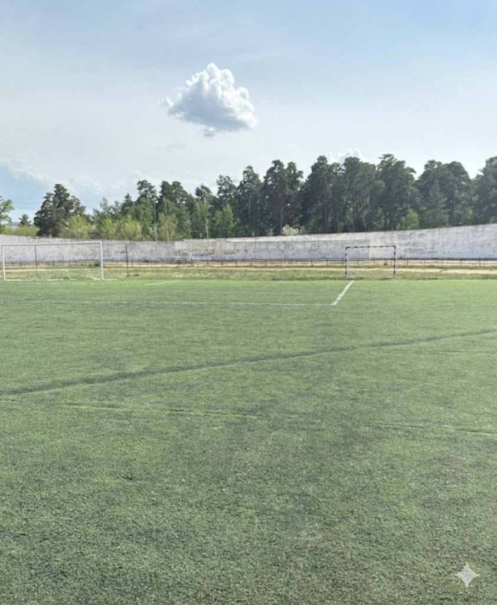
Главное спортивное сооружение Степногорска. Стадион является центром притяжения для любителей футбола и легкой атлетики. На его базе проходят городские спартакиады, матчи и тренировки, воспитывающие будущих чемпионов.
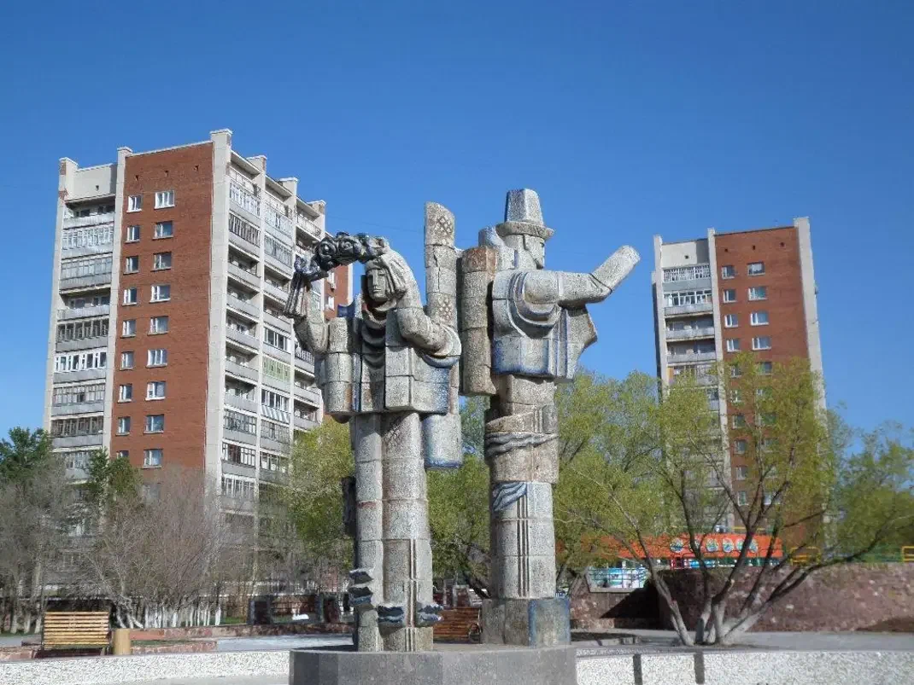
Появившаяся в период расцвета города, эта скульптура стала воплощением романтики степного края. Она была призвана смягчить строгий индустриальный облик Степногорска, добавив ему изящества и мифологической глубины.
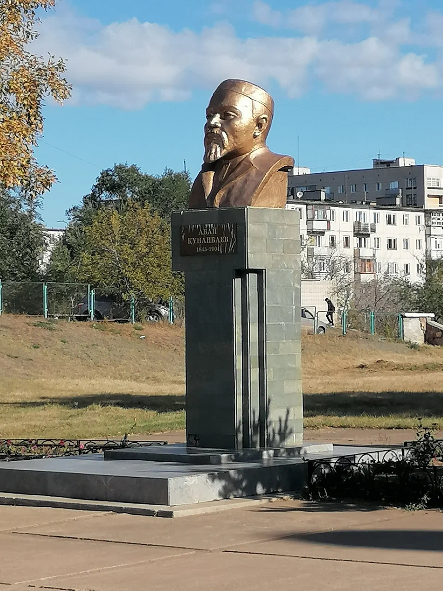
Бюст великого мыслителя был торжественно открыт в рамках празднования Дня города. Установка памятника Абаю стала важным шагом в укреплении национального самосознания и духовного развития жителей Степногорска.
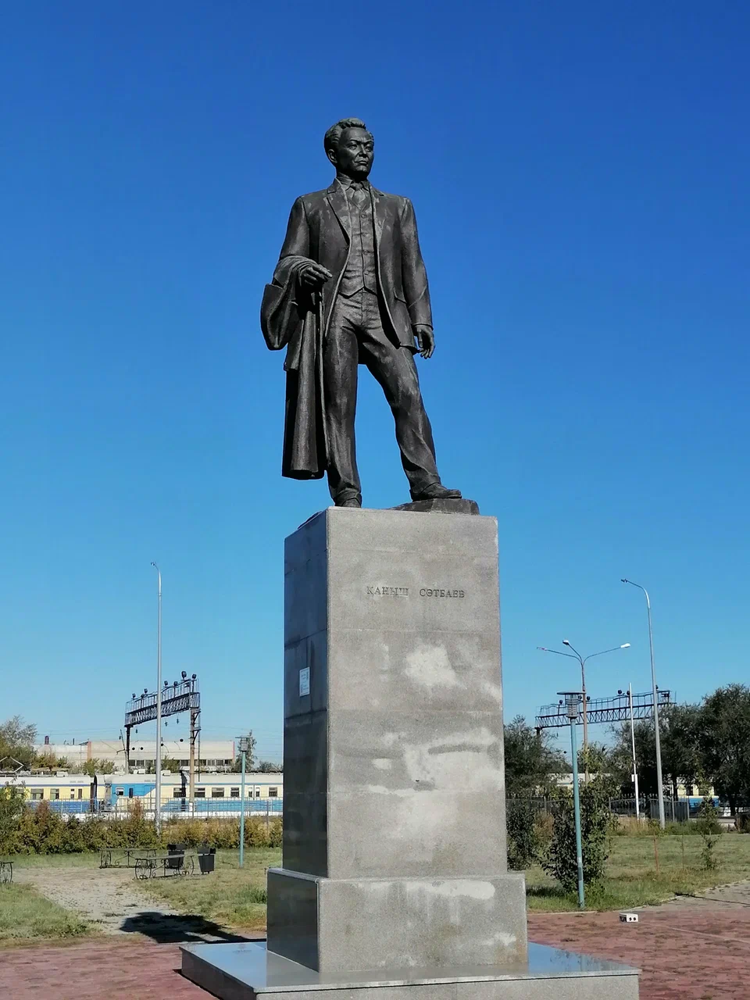
Монумент в честь отца-основателя казахстанской геологии появился в центре города как символ благодарности человека труда науке. Без изысканий Сатпаева не было бы Степногорска.
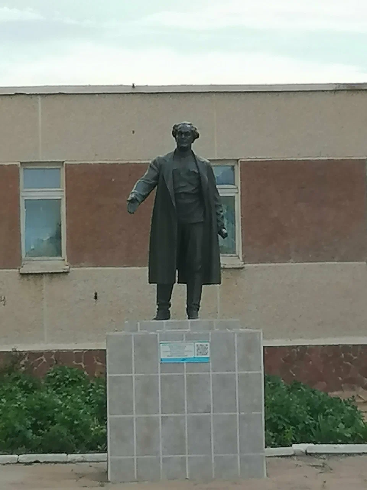
Установлен в знак уважения к евразийским идеям мыслителя. Гумилев подчеркивал уникальность степной цивилизации, что находит особый отклик в истории Степногорска.
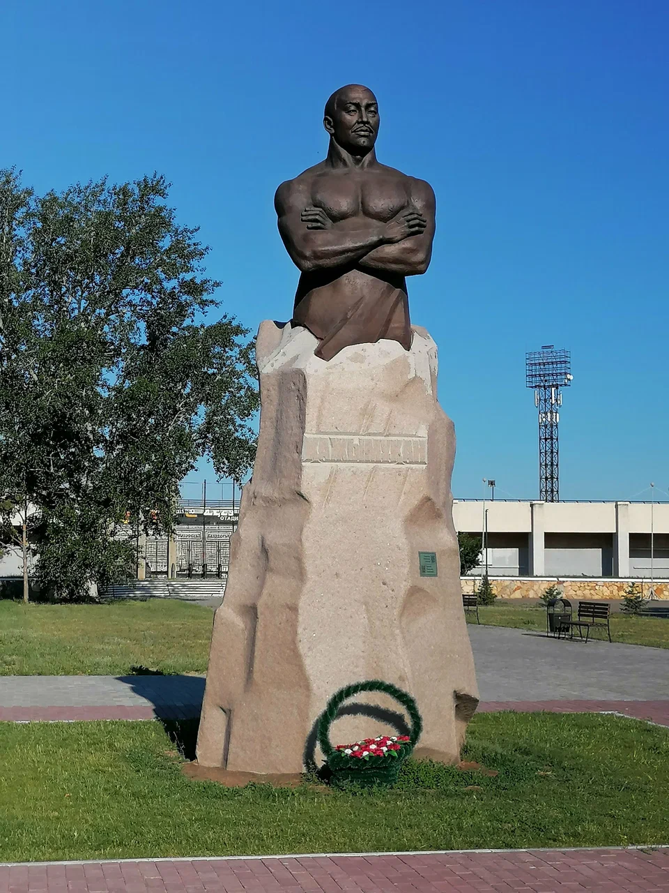
Монумент был возведен к годовщине великого борца. Место для памятника выбрано не случайно — он стоит на пути к спортивным объектам города, напоминая молодежи о силе духа.
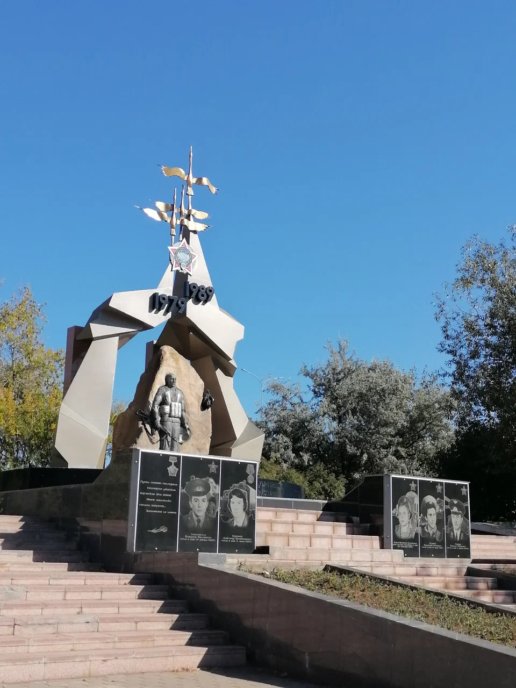
Был открыт по инициативе союза ветеранов Афганистана города Степногорска. Памятник стал одним из первых мемориалов в регионе, посвященных этой войне.
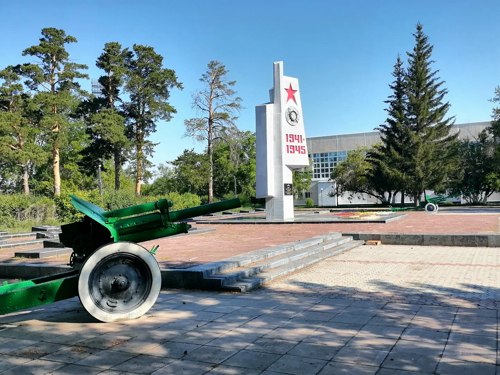
Открыт к 40-летию Великой Победы. Обелиск Славы является центральным местом проведения парадов. Это мемориальное пространство проектировалось как главная точка памяти.
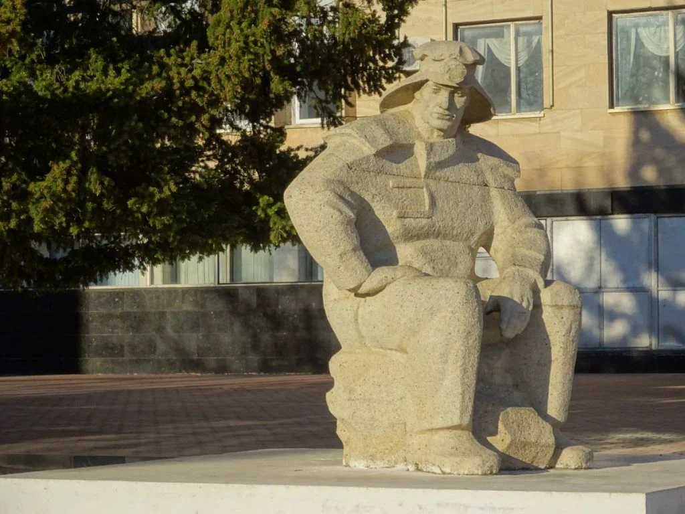
Установлен в советское время как дань уважения основной профессии города. Символизирует мощь горно-химического комбината и героизм людей, работающих под землей.
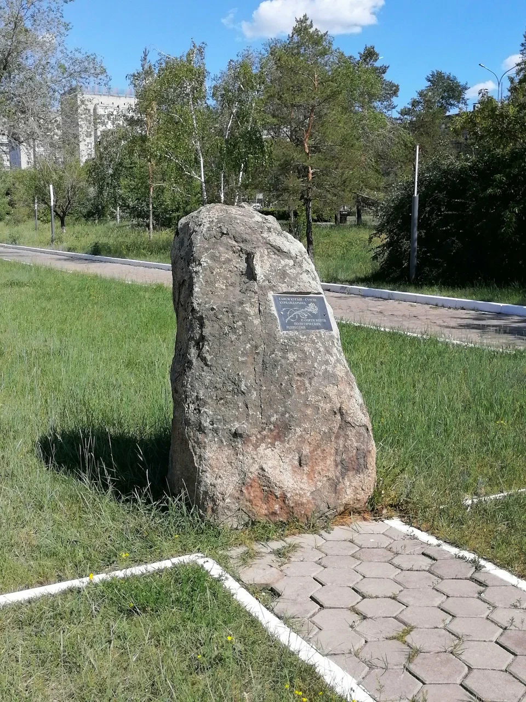
Построен в годы независимости Казахстана как символ восстановления исторической справедливости. Это место напоминает о трагических судьбах тысяч людей.